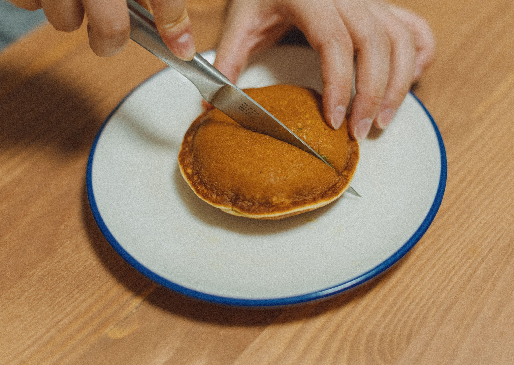
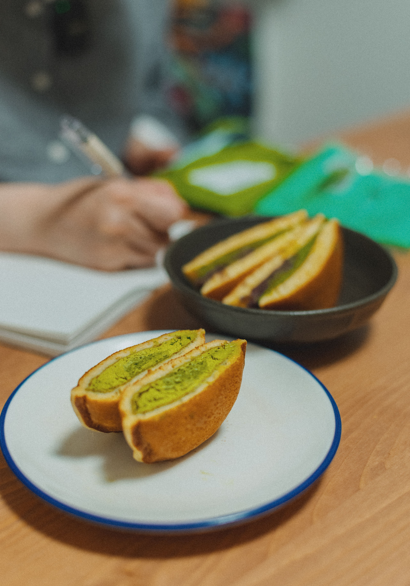
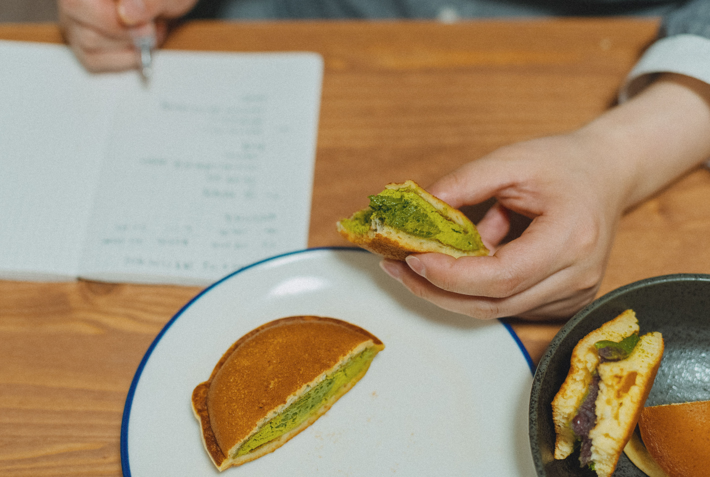

Massa cuita a la planxa
Dorayaki
Dues peces rodones, cuites a la planxa, amb una capa d’anko al mig. També n’hi ha de matxa i de xocolata.

La massa i el farciment
El dorayaki uneix dues peces circulars de massa amb un farciment al mig. El més tradicional és l’anko, una pasta dolça feta amb mongetes azuki.
Farina, ous, sucre i mel formen part de la massa. A l’obrador d’Ochiai també hi afegeixen rovells, sake i bicarbonat abans de coure-la a la planxa, tal com es veu al reportatge de betevé.
Més enllà de l’anko
A Ochiai també en preparen amb matxa i amb ganache de xocolata.
Fonts consultades Dorayakis, d’Ochiai i el reportatge de betevé amb Ken Ochiai.
El dolç en imatges
Selecciona una fotografia per ampliar-la. Pots passar-les amb les fletxes i tancar amb Esc.



Dorayakis a la paella
Sal + Pimienta prepara dorayakis farcits d’anko.
Vídeo de Sal + Pimienta en castellà, amb subtítols automàtics. Obre la demostració de dorayaki a YouTube.
El moment de girar-los
La massa es deixa reposar abans de passar-la a la paella. Quan hi surten bombolles, toca girar cada peça. Un cop cuites, s’ajunten de dues en dues amb anko al mig.